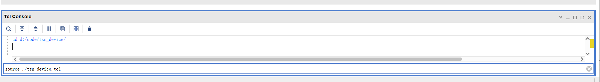
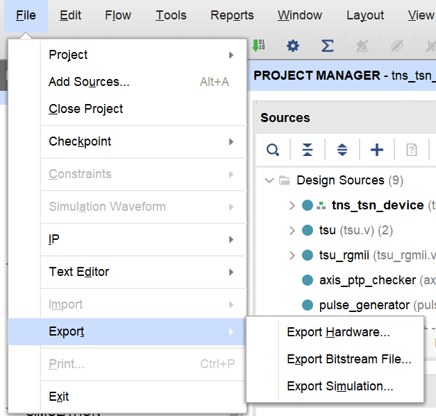

Hardware Build #
Before Start #
If you just want to teach the board to run instead of modifying it, and you use the hardware files we provide, you can skip directly to step SD card partition and copy file.
Table of Content #
- Hardware Build
Install Vivado #
You can download Vivado here.
We are using Vivado version 2020.1 (note: a unified version is required, otherwise running may cause problems).
Vivado project construction #
- clone the git repository for the hardware part.
- Open Vivado and enter the command
cd Porject_Dirin Tcl Console andsource ./tsn_device.tcl. After the command is executed, Vivado will automatically open the created project. Here, we will first close Vivado and rename the folder where the project is located toWork_ Dir, so that git can correctly ignore this directory and enterWork_ Dir, double-click the.xprfile to open the project again.


- Click
Generate Bitstream

-
Export the xsa file. In Vivado, File Export Export Hardware. Select Fixed for Platform type. Select include bitstream for Output. Click Finish to export the xsa file.
Exported xsa file path:
Work_Dir/tns+tsn_device.xsa
Petalinux #
1.install ubuntu OS #
The following compilation processes are all completed within the virtual machine.
We recommend using the following configuration:
Virtual machine version: VMware Workstation 16 Pro
Ubuntu version: ubuntu-16.04.3-desktop-amd64.iso
2.Download PetaLinux related image files in advance #
Enter website: https://www.xilinx.com/support/download/index.html/content/xilinx/en/downloadNav/embedded-design-tools/archive.html
Select 2020.1 to find PetaLinux Tools sstate-cache artifacts and download sstate_ arm_ 2020.1 and downloads and save the downloads in a specified directory in the virtual machine on January 2021 (the directory for this document is set to/home/alinx/data/)

3.Activate the PetaLinux environment #
source /opt/pkg/petalinux/settings.sh
Automatically activate the PetaLinux environment every time Terminal is started.
4.Create PetaLinux Project #
petalinux-create --type project --template zynq --name <project_name>
cd <project_name>
5.Petalinux Configuration #
- Import Hardware Configuration
petalinux-config --get-hw-description <PATH-TO-XSA Directory>
Then you will enter the menuconfig page and configure as follows:
Subsystem AUTO Hardware Settings
-> Ethernet Settings
-> [*] Randomise MAC address
Image Packaging Configurations
-> Root filesystem type
-> [*] EXT4 (SD/eMMC/SATA/USB)
Yocto Settings (Use downloaded image)
-> Local sstate feeds settings: /home/alinx/data/sstate_arm_2020.1/arm
-> Add pre-mirror url: file:///home/alinx/data/downloads
- make
Kernel Module
make a module named “dma proxy”:
petalinux-create -t modules -n dma-proxy --enable
replace the dma-proxy folder:
rm -rf project-spec/meta-user/recipes-modules/*
download our dma-proxy (from here) and unzip in project-spec/meta-user/recipes-modules/
- Configuring the kernel
petalinux-config -c kernel
Entering the menuconfig page, and do:
Device Drivers
-> Userspace I/O drivers
-> [*] Userspace I/O platform driver with generic IRQ handling
-> [*] Userspace platform driver with generic irq and dynamic memory
-> [*] Xilinx AI Engine driverDevice Drivers
-> Dma Engine Support
-> [*] Xilinx DMA Engines
-> Network device support
-> Ethernet driver support
-> [*] Cadence devices
-> [*] Cadence MACB/GEM support
General setup
-> Preemption Model
-> (X) No Forced Preemption (Server)
- Configuring rootfs
Edit file project-spec/meta-user/conf/user-rootfsconfig, and add the following configuration:
CONFIG_sudo
CONFIG_sudo-dev
CONFIG_dnf
CONFIG_packagegroup-core-buildessential
CONFIG_packagegroup-core-buildessential-dev
CONFIG_packagegroup-self-hosted
CONFIG_packagegroup-self-hosted-dev
CONFIG_packagegroup-self-hosted-sdk-dev
CONFIG_packagegroup-self-hosted-sdk
CONFIG_python3
CONFIG_autoconf
CONFIG_autoconf-dev
CONFIG_automake
CONFIG_automake-dev
CONFIG_bison
CONFIG_bison-dev
CONFIG_flex
CONFIG_flex-dev
CONFIG_make
CONFIG_make-dev
CONFIG_python
CONFIG_libtool
CONFIG_libtool-dev
CONFIG_sqlite3
CONFIG_cmake
CONFIG_util-linux
CONFIG_net-tools
Save and exit.
Input:
petalinux-config -c rootfs
Then you will enter the menuconfig page and configure as follows:
Image Features
-> [*] package management
-> (http://petalinux.xilinx.com/sswreleases/rel-v2020/feeds/zc702-zynq7/) Package feed url.
user packages
-> SELECT ALL
- Compile the device tree
petalinux-build -c device-tree
- Modify the device tree
The generated device tree is located in components/plnx_workspace/device tree/device tree/pl.dtsi directory, we need to make modifications based on this file to meet some of our peripheral needs. The modified files are stored in the project-spec/meta user/recipes bsp/device tree/files/system-user.dtsi directory.
Note: Between the
//>>>and//<<<is the content added between the comments.
/include/ "system-conf.dtsi"
/ {
amba_pl: amba_pl {
dma_proxy {
compatible ="xlnx,dma_proxy";
dmas = <&axi_dma_0 0 &axi_dma_0 1>;
dma-names = "dma_proxy_tx", "dma_proxy_rx";
};
pkt_gen_controller_0: pkt_gen_controller@43c00000 {
compatible = "generic-uio","uio";
reg = <0x43c00000 0x10000>;
};
rtc0: time_sync_uio@43c10000 {
compatible = "generic-uio","uio";
reg = <0x43c10000 0x10000>;
};
};
chosen{
bootargs = "console=ttyPS0,115200 earlyprintk cma=256M uio_pdrv_genirq.of_id=generic-uio root=/dev/mmcblk0p2 rw rootwait";
stdout-path = "serial0:115200n8";
};
};
&gem1 {
local-mac-address = [00 00 00 00 02 01];
phy-mode = "gmii";
fixed-link {
speed = <1000>;
full-duplex;
};
};
- Complie
petalinux-build
- Pack
Here, you need to copy the bitstream file generated by Vivado to the virtual machine. (You can export bitstream file to where you want).

Then:
cd images/linux
petalinux-package --boot --fsbl zynq_fsbl.elf --fpga <FPGA bitstream path> --u-boot --force
After that, you can get 4 key file: BOOT.BIN boot.scr image.ub rootfs.tar.gz
6. SD card partition and copy file #
File downloading #
Download the following file from this public link or from preceding steps:
- BOOT.BIN
- boot.scr
- image.ub
- rootfs.tar.gz
SD card partition #
In order to boot the TSNPerf, you are supposed to have a micro SD card with >32GiB storage. Then use:
sudo apt-get install gparted
sudo gparted
Parition it into two partition below
-
BOOT: store boot files from petalinux
Free space preceding (MiB): 4
New size (MiB): 500
File system: fat32
Label: BOOT
-
ROOTFS: store debian system rootfs
Free space preceding (MiB): 0
Free space following (MiB): 0
File system: ext4
Label: ROOTFS
Copy files into SD card #
Mound SD card:
sudo mount /dev/sda1 /media/alinx/BOOT/
sudo mount /dev/sda2 /media/alinx/ROOTFS/
Remove original files:
sudo rm -rf /media/alinx/BOOT/* /media/alinx/ROOTFS/*
Copy files:
sudo cp BOOT.BIN boot.scr image.ub /media/alinx/BOOT
sudo tar -zxvf rootfs.tar.gz -C /media/alinx/ROOTFS
sudo cp -r ~/init_os.sh /media/alinx/ROOTFS/home/root/init_os.sh
sync
sudo chown root:root /media/alinx/ROOTFS
sudo chmod 755 /media/alinx/ROOTFS
Launch the Board and log in #
1. Launch the Board #
Plug the SD card into FPGA board, turn the switch to SD card boot mode.

2. Initialize PS #
Plug in SD card, setup AX7021 board to boot on SD, power on.
Connect a PC to the UART port of the board. We recommend using MobaXterm to connect the serial. Set up the Speed to 115200, Flow Control to None.

The default username and password are as follows:
username: "root"
password: "root"
Execute the initilization script to set up the linux environment. (hardware/init_os.sh)
sh init_os.sh
You can freely configure the host name, IP address, and MAC address, etc with the script, and can modify the script if needed.
3. Connect to Internet #
Connect the PC’s network port to the device’s PS network port (ETH0).
Set up PC’s corresponding port to be in the same subnet with the device (i.e., 192.168.137.x).
Afterwards, you can connect to the device through ssh and copy any Software files needed.
4. Run the Software #
Please refer to the software part of this repo for further instructions.